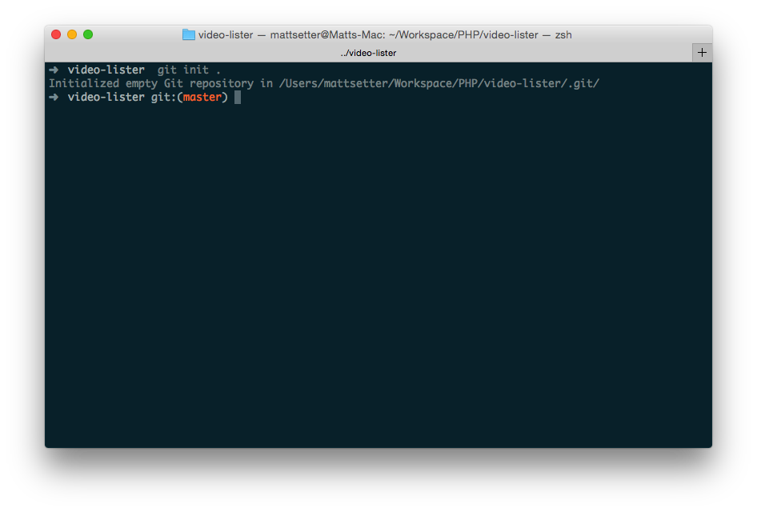
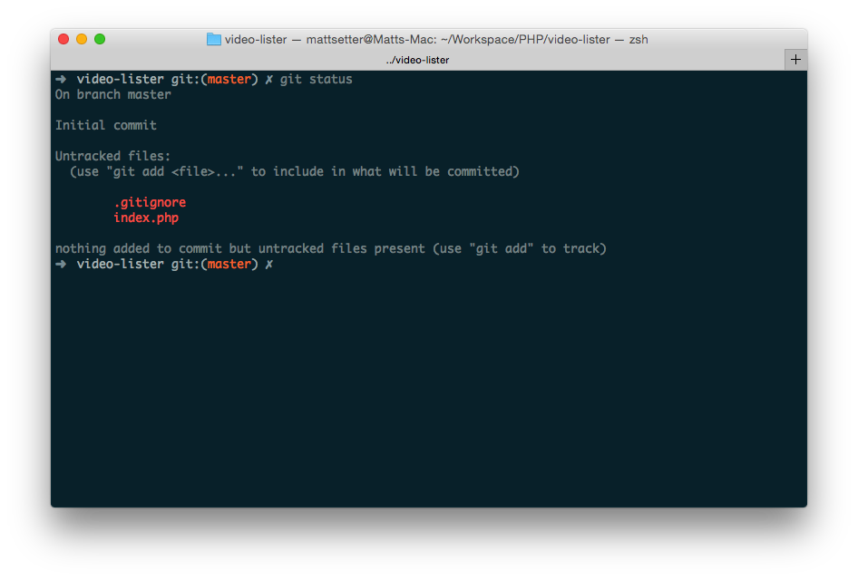
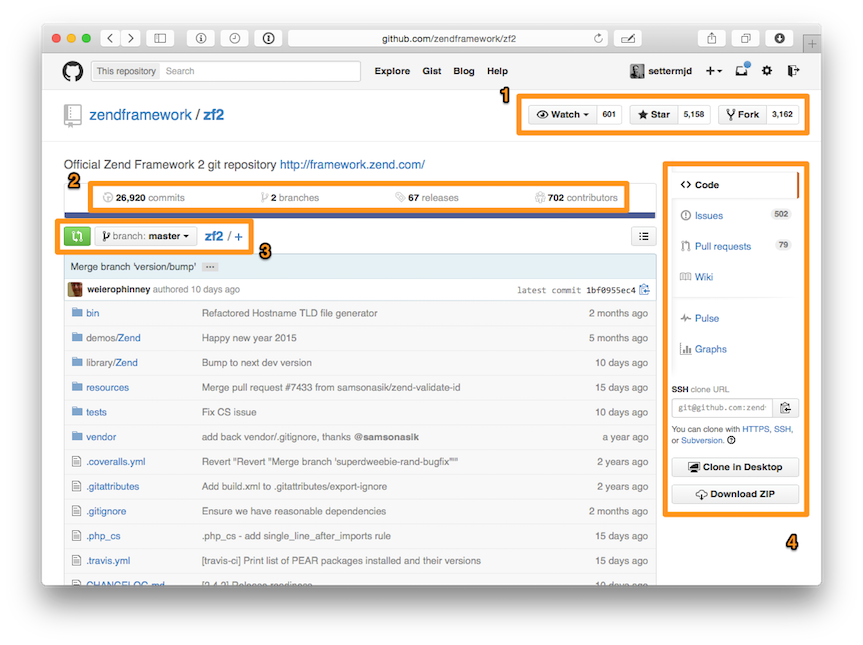
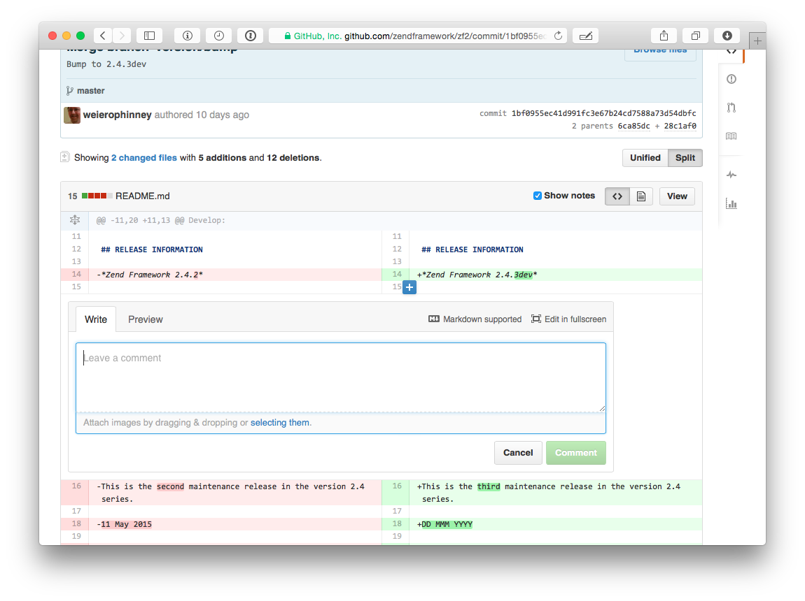
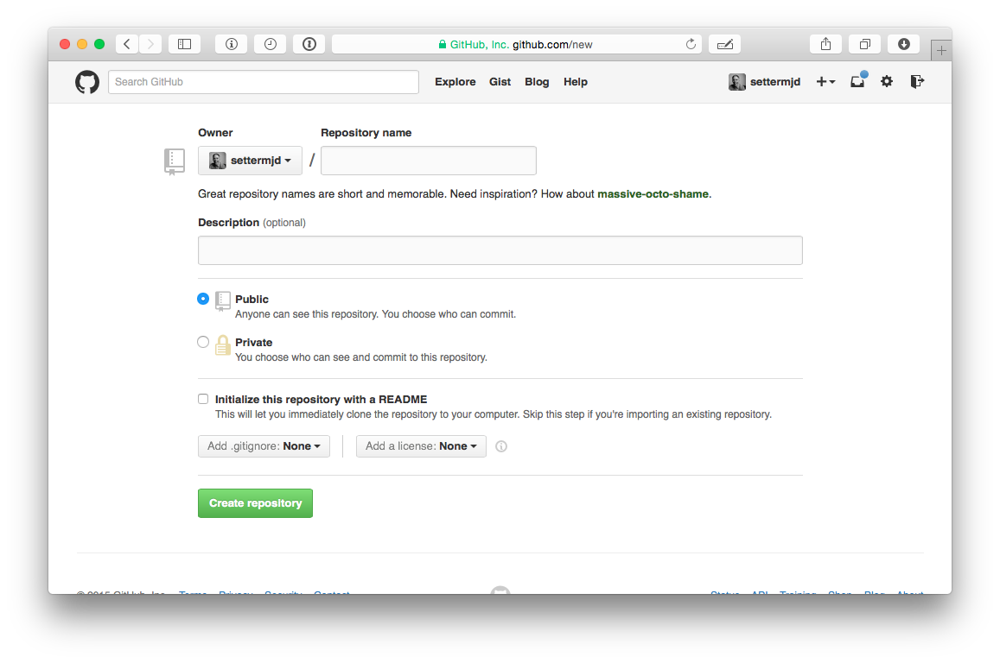
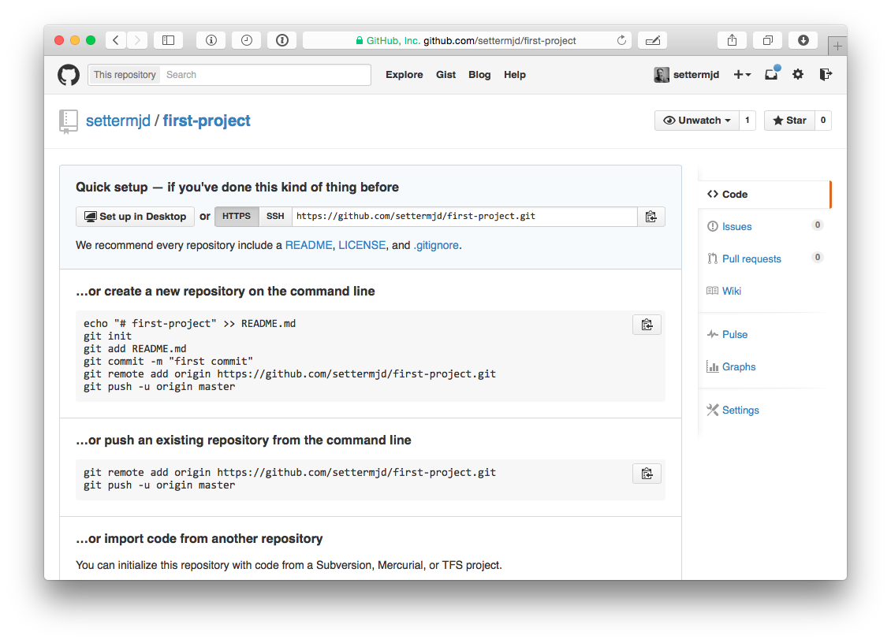
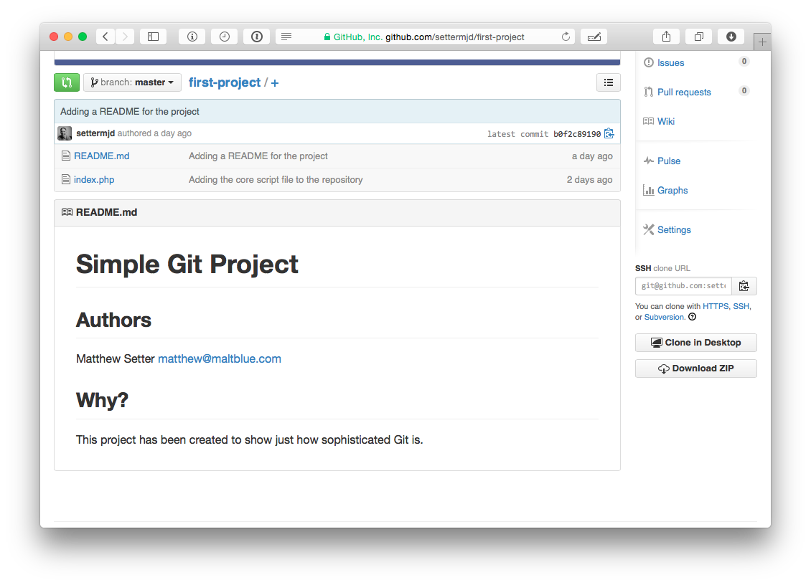

Github
Git e Github são duas ferramentas muito interessantes para os desenvolvedores. O Git, apesar de sua complexidade, é a ferramenta de controle de versão favorita da maioria dos profissionais, de web designers a desenvolvedores kernel.
Já o GitHub é a plataforma de hospedagem de código mais utilizada do mundo e onde você encontrará de tudo, de experimentos lúdicos e simples ao próprio kernel do Linux.
Ambas as ferramentas são extremamente sofisticadas, proporcionando uma vasta gama de funcionalidades. E, para extrair o máximo de cada uma, é preciso estar preparado para as complexidades que se apresentarão pelo caminho.
Como usar o Git
O Git é um sistema de controle de versão de arquivos e, antes de abordar mesmo conceitos básicos de GitHub, é importante entender como funciona esse repositório local.
Fundamentos de Gi
Passo 1
Antes de qualquer coisa, é preciso que você instale algumas coisas, como a versão mais recente de Git para o seu sistema operacional. Se estiver usando o Linux, você poderá instalá-la usando seu gerenciador de pacotes.
Baixe o Github Link github
Passo 2
É preciso que você esteja minimamente familiarizado com a utilização da linha de comando. Caso ainda não esteja, tudo bem: este artigo trata tudo de forma clara e simples.
Passo 3
Crie um repositório simples, composto por um arquivo de código e um README. Certifique-se de ter um diretório reservado para isso.
Com tudo preparado, agora vamos passar para um conjunto padrão de ações que você costuma seguir diariamente – mais especificamente, init, clone, add, commit, diff e log.
Começando um repositório
O primeiro passo para trabalhar com o Git é inicializar um repositório de projeto para que o próprio Git possa gerenciá-lo. Para isso, execute o comando git init. Como demonstrado abaixo.
Um novo diretório oculto chamado .git surgirá no diretório de seu projeto. Nesse local, o Git armazena seus conjuntos de dados e informações de configuração
Clonando um repositório
Esta é uma maneira alternativa de acessar um repositório: clonando. Semelhante à verificação de um repositório em outros sistemas, executar a função git clone < repository URL > criará uma cópia completa do repositório remoto em seu sistema local. Agora, você pode modificá-lo da maneira que
Adicionando um novo arquivo
Salve o arquivo e execute o comando git status. Isso exibirá o status atual de seu repositório, que, por sua vez, deve ser semelhante à captura de tela abaixo, com index.php listado como um novo arquivo não rastreado.
Como usar o GitHub
Agora que estamos mais familiarizados com o Git, vamos tratar do GitHub. Para facilitar o aprendizado, utilizarei capturas de telas de um projeto do GitHub. Sim, essa ferramenta é muito mais que um simples repositório de projeto. Mas é nele que você passará a maior parte do tempo.
Você está vendo um projeto de site. Na parte de cima, no ponto 1, estão listados o nome do projeto, quantas pessoas o estão visualizando, quantas pessoas aderiram e quantas solicitaram permissão para fazer mudanças e contribuir com o projeto.
O ponto 2 mostra o número de commits do branch atual, o número de branches, o número de releases e o número de colaboradores. No ponto 3 fica o coletor de branches, uma lista dos arquivos do projeto e quando os últimos commits foram realizados.
Ao lado direito, ponto 4, temos as opções de navegação. São elas:
Code: A exibição padrão dos arquivos do projeto.
Issues: Um rastreador de problemas simples e eficaz, se você e a equipe quiserem denunciar erros e problemas, solicitar novos recursos,
Wiki: Um wiki simples (e também eficaz) para documentar o projeto de forma mais detalhada do que permite um arquivo README
Pulse: Um resumo das estatísticas do projeto que inclui problemas que surgiram e suas respectivas soluções. É com esse recurso que podemos medir as progressões do projeto.
Graphs: Um apanhado geral dos commits realizados, separados por cada colaborador do projeto. Com base em uma série de métricas e indicadores, podemos usar as guias disponíveis para análise detalhada da atividade evolutiva do projeto.
Por fim, ainda no lado direito, fica o link para o repositório URL. Se quiser clonar esse projeto, essa é a URL que você deve passar pelo git clone.
Agora vamos analisar o histórico dos commits, clicando em commits. Aqui é possível visualizar os commits em ordem cronológica reversa. No lado esquerdo podemos ver uma breve descrição dos commits: nome do autor e data de realização. À direita fica a versão resumida e um link para o commit.
Clique para ver as respectivas alterações. Nesse exemplo, podemos ver as diferenças do arquivo README do projeto comparado a um segundo arquivo library/Zend/Version/Version.php.
É possível ver no lado esquerdo o que foi removido da versão anterior e, no lado direito, o que foi adicionado a essa versão. Acima de cada commit, no lado esquerdo, você vê um breve resumo mostrando tanto o total de alterações (neste caso, 15) quanto uma representação visual dessas mudanças. Vamos nos divertir um pouco.
Passe o mouse sobre o lado direito ou esquerdo. Observe que um ícone azul apareceu. Se clicar nesse ícone, você pode fazer um comentário naquele código específico. É esse tipo de característica que torna o GitHub uma ferramenta verdadeiramente colaborativa.
Uma última dica: quer fazer um comentário geral no commit? Ao fim de cada um deles existe um espaço para comentários gerais. Clique nas outras guias e explore o que cada uma tem para oferecer.
Como adicionar nosso projeto ao GitHub
Vamos cuidar de passar nosso projeto para o GitHub Para isso, faça seu login, clique no sinal de soma (+) no canto superior direito e, no menu suspenso, clique em New repository. Isso dará acesso ao formulário de criação de um projeto.
No campo Repository name, adicione um nome. Não precisa de nada especial. Pode ser “primeiro projeto”. Se quiser, faça uma breve descrição. Talvez “Meu primeiro projeto no GitHub”. Em seguida, mude o padrão do projeto para “Public”. Isso fará com que qualquer um consiga acessá-lo.
Por fim, clique em Initialize this repository with a README e deixe os dois checkboxes marcados como None. Agora, clique em Create repository.
Isso nos conduzirá à página de configuração. Esta página oferece uma série de informações sobre a integração do novo projeto GitHub e o repositório local já existente. Vamos adicionar o GitHub como um controle remoto para nosso projeto.
Para isso, copie a primeira linha abaixo do …or push an existing repository from the command line e a cole no terminal que está sendo utilizado até agora.
Isso não apresentará nenhum resultado. Agora, copie a segunda linha e cole-a no terminal. Esse comando conduzirá nossas alterações ao GitHub. Você verá um resultado parecido com a tela abaixo.
Agora, volte ao Github em seu navegador e atualize a página. Você verá o README.md e index.php na lista de arquivos, e também o conteúdo do README.md representado na parte inferior da página.
